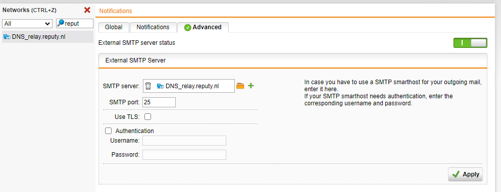

Sophos inrichten
Technisch ontwerp Vernieuwing infrastructuur
Uitleg
In deze documentatie
Installatie SGxxx
Geef een PC het IP-nummer 192.168.0.2 en sluit de Sophos SGxxx aan via
eth0/LAN op hetzelfde netwerk.

Benader de Sophos SGxxx via https://192.168.0.1:4444
Vul de basic system setup in.
Hostname : afkortinglocatie-rou01.montapacking.nl , bijv
we30.rou01.montapacking.nl
Zet account (admin) in PasswordState.
Wijzig het IP-nummer van de Sophos in het IP-nummer van de locatie dus
bijv 172.18.4.1
Sluit
Voer setup uit en vul de DHCP-reeks in van VLAN 1.


Na Finish krijgt de Sophos het nieuwe IP-nummer. Zet de PC vervolgens op DHCP. Deze krijgt nu een IP-nummer uit de DHCP-reeks van de nieuwe locatie. Hierna is de Sophos te benaderen via bijv https://172.18.4.1:4444.
Management \ High Availability:
Zet deze uit:

Interfaces & Routing
Eth0 omzetten naar eth3 en hernoemen naar 01-DATA.
Verplaats de utp-kabel van eth0 naar eth3.
De rest van de VLANs aanmaken volgens IP plan (bij interfaces).
Interfaces aanmaken :
ETH0:
Internet-01 (Master)
ETH1:
Internet-02 (Slave)

ETH3:
01-DATA (Default)
20-Wifi
25-Gast
30-Voice
99-Security
Zie voor details configuratie andere Sophos en IP-lijst -- plan van de betreffende locatie.
Voorbeeld 20-Wifi


Tabblad Uplink Balancing:
Active Interfaces:
Internet-01 (Master)
Internet-02 (Slave)
Internet-03 (4G)
Stel het gewicht in :

Quaility of Service (QoS)
MP-Gast knijpen
Zie "S:\8.0 Automatisering\2.1 Netwerk\Sophos QoS.pdf"

Sluit nu op de Internet poort (eth3) een [extra]{.underline} netwerk-kabel aan naar het "gewone" netwerk van de locatie waar je bent. De sophos heeft nu een internet-connectie en via de laptop/computer met een IP-nr in de Sophos-reeks kun je de Sophos blijven beheren.
Download Throttling rule
Om er voor te zorgen dat bij het downloaden niet de gehele lijn dicht
getrokken kan worden dient er een download throttling rule aangemaakt te
worden. Maak bij "interfaces & routing"onder Q0s op het tabblad Traffic
Selectors eerst een traffic selector aan van any->any->any.

Maak nu een throttling rule aan op de hoofdverbinding.

Upload en download wordt altijd vanuit de UTM gezien. Dus in dit geval download vanaf het internet naar de UTM. Dus de throttling rule bouden aan Internet.
SUM:
Voor het koppelen aan de SUM ga naar Management / Central Management:

Resultaat moet worden:

Shared Secret Key staat in PasswordState.
Refresh page indien resultaat nog niet getoond wordt.
Log in op https://10.10.202.17:4422
De nieuwe Sophos verschijnt automatisch in de SUM.
Voeg het nieuwe netwerk toe aan de sum bij "Configuration \
Definitions" (clone van andere vestiging). Het gaat dan om de 3 VLAN-en
: VLAN01, 20 en 30. Voeg ook de verbindingen toe (bijv
"Loc_Mol19_WAN01_Glasvezel" en "Loc_Mol19_WAN02_BVDSL" in Mgraaf).
Deploy nu deze 3 nieuwe netewrken vanaf de SUM naar alle andere
routers.
Voeg deze netwerken en verbindingen toe aan "Loc_montapacking".
Ga nogmaals naar "Configuration \ Definitions" tabblad network, zet het
antal getoonde definitions op 100 en vink all regels aan met een hoog
aantal (en selecteer daarbij ook alle definitions van de betreffende
locatie). kies bij action voor voor "deploy to gateways". Sleep bij
"Select Gateways" dan de nieuwe Sophos (bijv br04-rou01) als doel.
Herhaal dit voor het tabblad services
DHCP
DHCP-reeksen instellen volgens Default IP-plan.
Zie Sophos andere vestiging en het IP-plan. Clonen werkt het snelst.

Network Protection \ NAT:

Network Protection \ VOIP:
Zorg er voor dat zowel SIP als H.323 uit staan.
DNS:


Settings
Management \ SSH
Bij management -- System settings het SSH wachtwoord instellen en
allowed Networks instellen., maar de Shell access kan aan blijven staaan
(wens netstream). 
Management \ Notifications
Zet op het tabblad Advanced SMTP aan: 
Site to Site VPN \ IPsec
Remote Gateway:
Eerst een remote gateway aanmaken en daarna de connectie.
NLDC-VPNGW aanmaken, preshared key staat in de IP-lijst tabblad "NLDC | PSK Keys"

Connections
Int-NLDC-VPN aanmaken. Bji local networks alle 4 de VLAN's toevoegen (Gast is hierbij niet van toepassing). Doel is dat ook voice en security vanaf datacentre te beheren zijn (Aspect kan dan als Admin-Aspect inloggen en locaties beheren).

Op de DC-ROU01 moet "site to site vpn" ook aangemaakt worden.
Eerst moet bij "remote gateways" de nieuwe gateway toegevoegd worden en
vervolgens bij connections. Bij de remote networks moeten alle 4 de
VLAN's toegevoegd worden (Gast is hierbij niet van toepassing).


[]{#_Toc528686303 .anchor}Algemeen
De rechten worden vanuit AD verleend via de groep "APPS --
SophosAdmin".
Op elke Sophos is een AD koppeling gemaakt met de "MP-DC03" en de
MP-DC04. Hierbij wordt gebruik gemaakt van het "rs.sophos" account (zie
MontaPassword).
In de Sophos wordt er een Sync uitgevoerd en een nieuwe locale groep is
aangemaakt: "ADAdmin". Deze wordt in de WebAdmin Settings toegevoegd bij
"Allowed Administrators"
Bij "Allowed Networks" zal "Loc_Montapacking_ITSupport" worden toegevoegd.
Definitions and Users
Service Definitions
Voeg bij de service definition "Email Messaging" "SV_SMTPSSL (live.com) toe".
Users & Groups.
[]{#_Toc528686307 .anchor}Maak bij de users "localuser-netstream" aan met het wachtwoord uit passwordstate.

Maak bij Groups de group ADAdmin in en kies in ID de groep "APPS-SophosAdmin"

Authentication services
Tabblad Global Settings.

Tabblad Servers
Maak bij Definitions and Users \ authentication services -- Servers
onderstaande server aan.
Vul bij Bind "CN=rs.sophos,OU=RS,OU=MontaUser,DC=montapacking,DC=nl" in
.
Verder SSL aanvinken en poort 636 gebruiken (ldaps)
Wachtwoord staat in MontaPassword

Tabblad Advanced
Voeg de groep "APPS-SophosAdmin" toe.

**
**
Management
Webadmin settings. 
Het is belangrijk om bij "Allowed Administrators"
"localuser-netsrteam"en bij "Allowed networks" "Netstream-DNS" toe te
voegen.
Hiermee kan Netstream op afstand support leveren.
Notifications
Tabblad Global

Tabblad Notifications.
Bij Up2Date notificatie Patterns uitzetten.

Tabblad Advanced

SNMP

Network Protection
Intrusion Prevention
Tabblad Global

Tabblad Anti-portscan

Tabblad Exceptions

Network services
NTP

Network protection
Firewall:
Tabblad Rules
Op elke firewall regel Logging aanzetten.

Hoe meer bekend is van de alarm-IP-nrs des te specifieker kan de firewall rule, bijvoorbeeld die van Oosterhout is optimaal:


Alleen bij MP-GAST zijn de VPN-Protocols toegevoegd zodat klanten eventueel verbinding kunnen maken met de eigen omgeving.
Regel 9 waarin voor MP-GAST DNS naar Google-DNS wordt open gezet moet aangezet worden als bij DHCP bij MP-GAST als DNS1 en 2 die van Google worden gebruikt.
Als regel 23 is aangezet kan bij "Network Protection -- Firewall -- tabblad ICMP " "Gateway Ping Visible" worden uitgezet.


** **
Speciale Rules:
+------------------+---------------------+-----------------------+-----+ | Locatie | | | | | gebonden: | | | | +==================+=====================+=======================+=====+ | Source | Services | Destinations | * | | | | | Ac | | | | | tio | | | | | n* | +------------------+---------------------+-----------------------+-----+ | Weide 30 | 2222 (DirectAdmin) | DN | Al | | | | S_www.montapacking.nl | low | | 01-Internal | | | | | (Network) | | | | +------------------+---------------------+-----------------------+-----+ | Weide 30 | 51292, 52737, 53165 | Any | Al | | | en 10001 (Alarm) | | low | | 01-Internal | | | | | (Network) | | | | +------------------+---------------------+-----------------------+-----+ | Polderweg Oost | Any (Alarm) | Any | Al | | 19 | | | low | | | | | | | Mol19_Host_Alarm | | | | | (172.16.5.30) | | | | +------------------+---------------------+-----------------------+-----+ | 01-Internal | 554,8002 en 9001 | Any | | | (Network) | (Camera Systeem) | | | | | | | | | 20-Wifi | | | | | (Network) | | | | | | | | | | 30-Voice | | | | | (Network) | | | | | | | | | | 99-Security | | | | | (Network) | | | | +------------------+---------------------+-----------------------+-----+ | Host_O | OOS | Hos | Al | | OS4_Alarm_intern | 4_SV_Alarm_Centrale | t_OOS4_Alarm_Centrale | low | | (172.25.11.80) | (8998) en | (193.105.50.208) | | | | OOS4_ | host_ | | | | SV_Alarm_management | OOS4_Alarm_Management | | | | (3001) | (83.161.219.254) | | +------------------+---------------------+-----------------------+-----+
Waspik Alarm en CCTV


Tabblad ICMP
Ping settings
Dit kan alleen als de firewall-regel voor ping vanaf loc_montapacking aan staat.

Tabblad Country Blocking:
Betekenissen:
From Traffic geblokkeerd vanuit het land
To Traffic geblokkeerd naar het land
All Traffic geblokkeerd vanuit en naar het land
Off Traffic toegestaan zowel vanuit als naar het land
+----------------------+-----------------------+-----------------------+ | Continent | Default | Uitzonderingen | +======================+=======================+=======================+ | North America | From | | +----------------------+-----------------------+-----------------------+ | South America | From | | +----------------------+-----------------------+-----------------------+ | Europe | From | Deny (All): | | | | | | | | Russian | | | | | | | | Allowed (Off): | | | | | | | | Belgium | | | | | | | | France | | | | | | | | Germany | | | | | | | | Great Britain | | | | | | | | Luxembourg | | | | | | | | Netherlands | +----------------------+-----------------------+-----------------------+ | Middle East | From | | +----------------------+-----------------------+-----------------------+ | Africa | From | | +----------------------+-----------------------+-----------------------+ | Asia | From | Deny (All): | | | | | | | | China | +----------------------+-----------------------+-----------------------+ | Oceania | From | | +----------------------+-----------------------+-----------------------+ | Antarctica | From | | +----------------------+-----------------------+-----------------------+
Tabblad Country Blocking Exceptions:** **Op IP-nummer kunnen er whitelists worden toegevoegd.
Logging & reporting
Log settings
Remote Syslog aanzetten en Iview-server toevoegen:
DNS_SV_mp-iview.montapacking.nl


Firmware updaten
Firmware updaten kan lokaal op de Sophos maar ook vanuit de SUM.
Klik vanuit de SUM op "monitoring \ versions" en dan update firmware.

Backup
De Backup wordt automatisch wekelijks vanuit de SUM gemaakt. Hiervoor behoeft op de Sophos niets ingesteld te worden.
Bijlage : Definitions (via SUM deployed):
Networks:
+-----------------------+---------+---------------------+------------+ | Omschrijving: | Wa | Omschrijving: | * | | | arde: | | Waarde:* | +=======================+=========+=====================+============+ | Algemeen: | | | | +-----------------------+---------+---------------------+------------+ | DNS_ap | 10.10 | Loc_AspectICT_Netw | 145.13 | | p.e-commerceradar.com | .202.26 | | 1.155.0/27 | | | | | | | - | | | | | ap | | | | | p.e-commerceradar.com | | | | +-----------------------+---------+---------------------+------------+ | DNS_ | 10.10 | Loc_Datacenter_Netw | 10.1 | | app.justfulfilment.nl | .202.54 | | 0.202.0/24 | | | | | | | - | | | | | app.justfulfilment.nl | | | | +-----------------------+---------+---------------------+------------+ | DNS_ga | (by | Loc_RoutIT_Netw | 89. | | teway.montapacking.nl | DNS) | | 146.0.0/16 | | | | | | | - | | | | | ga | | | | | teway.montapacking.nl | | | | +-----------------------+---------+---------------------+------------+ | DNS_SV_ | 10.10 | | | | mp003.montapacking.nl | .202.13 | | | | | | | | | - | | | | | mp003.montapacking.nl | | | | | | | | | | - | | | | | webse | | | | | rvice.montapacking.nl | | | | | | | | | | - | | | | | statusmon | | | | | itor.montapacking.nl\ | | | | | -urenregistr | | | | | atie.montapacking.nl\ | | | | | - | | | | | processmo | | | | | nitor.montapacking.nl | | | | | | | | | | - | | | | | emailse | | | | | rvice.montapacking.nl | | | | +-----------------------+---------+---------------------+------------+ | DNS_SV_mp- | 10.10 | | | | ftp01.montapacking.nl | .202.21 | | | +-----------------------+---------+---------------------+------------+ | DNS_relay.reputy.nl | (by | | | | | DNS) | | | | - relay.reputy.nl | | | | +-----------------------+---------+---------------------+------------+ | DNS_GoogleDNS-1 | 8.8.8.8 | | | +-----------------------+---------+---------------------+------------+ | DNS_GoogleDNS-2 | 8.8.4.4 | | | +-----------------------+---------+---------------------+------------+ | Locatie gebonden: | | | | +-----------------------+---------+---------------------+------------+ | L | xx.x | Loc_<l | 172 | | oc_<locatie>_ADSL | x.xx.xx | ocatie>_Netw_VL01 | .xx.4.0/22 | +-----------------------+---------+---------------------+------------+ | L | xx.x | Loc_<l | 172 | | oc_<locatie>_VDSL | x.xx.xx | ocatie>_Netw_VL20 | .xx.0.0/23 | +-----------------------+---------+---------------------+------------+ | Loc | xx.x | | | | _<locatie>_B-VDSL | x.xx.xx | | | +-----------------------+---------+---------------------+------------+ | Loc_\ | xx.x | Loc_Montapacking | Alle | | <locatie>_Glasvezel | x.xx.xx | | locaties | +-----------------------+---------+---------------------+------------+ | Lo | xx.x | | | | c_<locatie>_Ziggo | x.xx.xx | | | +-----------------------+---------+---------------------+------------+ | Loc_NOORD_WAN03_4G | 62.12 | Loc_Mon | Alle IT | | | .26.117 | tapacking_ITSupport | locaties | +-----------------------+---------+---------------------+------------+ | Loc_ZUID_WAN03_4G | 92.6 | | | | | 5.0.247 | | | +-----------------------+---------+---------------------+------------+ | | | | | +-----------------------+---------+---------------------+------------+ | Host_Mol19_Alarm | 172. | | | | | 16.5.30 | | | +-----------------------+---------+---------------------+------------+ | | | | | +-----------------------+---------+---------------------+------------+
Services:
Algemeen:
SV_SMTPSSL (live.com) 587
Router NLDC:
SV_PRTG 8443
SV_SUM 4433
Locatie gebonden:
WEI30_SV_Alarm Group
WEI30_SV_Alarm_01 51292
WEI30_SV_Alarm_02 52737
WEI30_SV_Alarm_03 53165
OOS4_SV_Alarm_Centrale 8998